MOORE-SMITH CONVERGENCE
INTRODUCTION
This chapter is devoted to the study of Moore-Smith convergence. It will turn out that the topology of a space can be described completely in terms of convergence, and the major part of the chapter is devoted to this description. We shall also characterize those notions of convergence which can be described as convergence relative to some topology. This project is similar in purpose to the theory of Kuratowski closure operators; it yields a useful and intuitively natural way of specifying certain topologies. However, the importance of convergence theory extends beyond this particular application, for the fundamental constructions of analysis are limit processes. We are interested in developing a theory which will apply to convergence of sequences, of double sequences, to summation of sequences, to differentiation and integration. The theory which we develop here is by no means the only possible theory, but it is unquestionably the most natural.
Sequential convergence furnishes the pattern on which the theory is developed, and we therefore list a few definitions and theorems on sequences to indicate this pattern. These will be particular cases of the theorems proved later.
A sequence is a function on the set ω of non-negative integers. A sequence of real numbers is a sequence whose range is a subset of the set of real numbers. The value of a sequence S at n is denoted, interchangeably, by Sn or S(n). A sequence S is in a set A iff Sn ε A for each non-negative integer n, and S is eventually in A iff there is an integer m such that Sn ε A whenever n ≧ m. A sequence of real numbers converges to a number s relative to the usual topology iff it is eventually in each neighborhood of s. Using these definitions it turns out that, if A is a set of real numbers, then a point s belongs to the closure of A iff there is a sequence in A which converges to s, and s is an accumulation point of A iff there is a sequence in A ~ {s} which converges to s.
We shall want to construct subsequences of a sequence. A sequence S may converge to no point and yet, by a proper construction, a sequence may be obtained from it which converges. We wish to select an integer Ni, for each i in ω, such that SNi converges. Restated, we want to find a sequence N of integers so that the composition S ∘ N(i) = SNi = S(N(i)) converges. If no other requirement is made this is easy enough; if Ni = 0 for each i, then S ∘ N converges to S0 since S ∘ N(i) = S0 for each i. Of course, an additional condition must be imposed so that the behavior of a subsequence is related to the behavior of the sequence for large integers. The usual condition is that N be strictly monotonically increasing; that is, if i > j, then Ni > Nj. This condition is unnecessarily stringent, and we impose instead the requirement that, as i becomes large, Ni also becomes large. Formally, then, T is a subsequence of a sequence S iff there is a sequence N of non-negative integers such that T = S ∘ N (equivalently, Ti = SNi. for each i) and for each integer m there is an integer n such that Ni ≧ m whenever i ≧ n.
The set of points to which the subsequences of a given sequence converge satisfy a condition obtained by weakening the requirement of convergence. A sequence S is frequently in a set A iff for each non-negative integer m there is an integer n such that n ≧ m and Sn ε A. This is precisely the same thing as saying that S is not eventually in the complement of A; intuitively, a sequence is frequently in A if it keeps returning to A. A point s is a cluster point of a sequence S iff S is frequently in each neighborhood of s. Then, if a sequence of real numbers is eventually in a set so is every subsequence, and consequently if a sequence converges to a point so does every subsequence. Each cluster point of a sequence is a limit point of a subsequence, and conversely.
The definitions and statements above are phrased so as to be applicable to any topological space, but unfortunately the theorems, in this generality, are false. (See the problems at the end of this chapter.) This unhappy situation is remedied by noticing that very few of the properties of the integers are used in proving theorems on sequences of real numbers. It is almost evident (although we have not given the proofs) that we need only certain properties of the ordering. Strictly speaking, convergence of sequences involves not only the function S on the non-negative integers co, but also the ordering, ≧, of ω. For convenience, in the work on convergence, we modify slightly the definition of sequence and agree that a sequence is an ordered pair (S, ≧) where S is a function on the integers, and we discuss convergence of the pair (S, ≧). (It will turn out that convergence of the pair (S, ≦) is also meaningful, but quite different.) Mention of the order will be omitted if no confusion is likely, and convergence of a sequence S will always mean convergence of the pair (S, ≧).
It is also convenient to have a bound variable (dummy variable) notation for sequences, and accordingly, if S is a function on the non-negative integers ω, {Sn, n ε ω, ≧ } is defined to be the pair (S, ≧). If A is a subset of ω, then convergence of {Sn, n ε A, ≧} will also be meaningful and will be related to the convergence of (S, ≧).
After this lengthy introduction the notion of convergence is almost self-evident, lacking a single fact. Which properties of the order ≧ are used? These properties are listed below, and by using them the usual arguments of sequential convergence, with small modifications, are valid.
1 Notes E. H. Moore’s study of unordered summability of sequences [1] led to the theory of convergence (Moore and Smith [1]). The generalization of the notion of subsequence which we will use is also due to Moore [2]. Garrett Birkhoff [3] applied Moore-Smith convergence to general topology; the form in which we give the theory is approximately that of J. W. Tukey [1]. See McShane [1] for an extremely readable expository account.
The problems at the end of the chapter contain a brief discussion of another theory of convergence and appropriate references.
DIRECTED SETS AND NETS
A binary relation ≧ directs a set D if D is non-void and
(a)if m, n and p are members of D such that m ≧ n and n ≧ p, then m ≧ p;
(b)if m ε D, then m ≧ m; and
(c)if m and n are members of D, then there is p in D such that p ≧ m and p ≧ n.
We say that m follows n in the order ≧ and that n precedes m iff m ≧ n. In the usual language of relations (see chapter 0) the condition (a) states that ≧ is transitive on D, or partially orders D, and (b) states that ≧ is reflexive on D. The condition (c) is special in character.
There are several natural examples of sets directed by relations. The real numbers as well as the set ω of non-negative integers are directed by ≧. Observe that 0 is a member of ω which follows every other member in the order ≦. It is also noteworthy that the family of all neighborhoods of a point in a topological space is directed by ⊂ (the intersection of two neighborhoods is a neighborhood which follows both in the ordering ⊂. The family of all finite subsets of a set is, on the other hand, directed by ⊃. Any set is directed by agreeing that x ≧ y for all members x and y, so that each element follows both itself and every other element.
A directed set is a pair (D, ≧) such that ≧ directs D. (This is sometimes called a directed system.) A net is a pair (S, ≧) such that S is a function and ≧ directs the domain of S. (A net is sometimes called a directed set.) If S is a function whose domain contains D and D is directed by ≧, then {Sn, n ε D, ≧} is the net (S|D, ≧) where S|D is S restricted to D. A net {Sn, n ε D, ≧} is in a set A iff Sn ε A for all n; it is eventually in A iff there is an element m of D such that, if n ε D and n ≧ m, then Sn ε A. The net is frequently in A iff for each m in D there is n in D such that n ≧ m and Sn ε A. If [Sn, n ε D, ≧} is frequently in A, then the set E of all members n of D such that Sn ε A has the property: for each m ε D there is p ε E such that p ≧ m. Such subsets of D are called cofinal. Each cofinal subset E of D is also directed by ≧ because for elements m and n of E there is p in D such that p ≧ m and p ≧ n, and there is then an element q of E which follows p. We have the following obvious equivalence: a net {Sn, n ε D, ≧} is frequently in a set A iff a cofinal subset of D maps into the set A, and this is the case iff the net is not eventually in the complement of A.
A net (S, ≧) in a topological space  converges to s relative to
converges to s relative to  iff it is eventually in each
iff it is eventually in each  -neighborhood of s. The notion of convergence depends on the function S, the topology
-neighborhood of s. The notion of convergence depends on the function S, the topology  , and the ordering ≧. However, in cases where no confusion is likely to result we may omit all mention of
, and the ordering ≧. However, in cases where no confusion is likely to result we may omit all mention of  or of ≧ or of both and simply say “the net S (or the net {Sn, n ε D}) converges to s.” If X is a discrete space (every subset is open), then a net S converges to a point s iff S is eventually in {s}: that is, from some point on S is constantly equal to s. On the other hand, if X is indiscrete (the only open sets are X and the void set), then every net in X converges to every point of X. Consequently a net may converge to several different points.
or of ≧ or of both and simply say “the net S (or the net {Sn, n ε D}) converges to s.” If X is a discrete space (every subset is open), then a net S converges to a point s iff S is eventually in {s}: that is, from some point on S is constantly equal to s. On the other hand, if X is indiscrete (the only open sets are X and the void set), then every net in X converges to every point of X. Consequently a net may converge to several different points.
It is easy to describe the accumulation points of a set, the closure of a set, and in fact the topology of a space in terms of convergence. The arguments are slight variants of those usually given for sequences of real numbers.
2 THEOREM Let X be a topological space. Then:
(a)A point s is an accumulation point of a subset A of X if and only if there is a net in A ~ {s} which converges to s.
(b)A point s belongs to the closure of a subset A of X if and only if there is a net in A converging to s.
(c)A subset A of X is closed if and only if no net in A converges to a point of X ~ A.
PROOF If s is an accumulation point of A, then for each neighborhood U of s there is a point SU of A which belongs to U ~ {s}. The family  of all neighborhoods of s is directed by ⊂, and if U and V are neighborhoods of s such that V ⊂ U, then SV ε V ⊂ U. The net 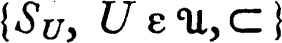, therefore converges to s. On the other hand, if a net in A ~ {s} converges to s, then this net has values in every neighborhood of s and A ~ {s} surely intersects each neighborhood of s. This establishes the statement (a). To prove (b), recall that the closure of a set A consists of A together with all the accumulation points of A. For each accumulation point s of A there is, by the preceding, a net in A converging to s; for each point s of A any net whose value at every element of its domain is s converges to s. Therefore each point of the closure of A has a net in A converging to it. Conversely, if there is a net in A converging to s, then every neighborhood of s intersects A and s belongs to the closure of A. Proposition (c) is now obvious. ∎
of all neighborhoods of s is directed by ⊂, and if U and V are neighborhoods of s such that V ⊂ U, then SV ε V ⊂ U. The net 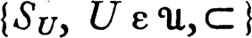, therefore converges to s. On the other hand, if a net in A ~ {s} converges to s, then this net has values in every neighborhood of s and A ~ {s} surely intersects each neighborhood of s. This establishes the statement (a). To prove (b), recall that the closure of a set A consists of A together with all the accumulation points of A. For each accumulation point s of A there is, by the preceding, a net in A converging to s; for each point s of A any net whose value at every element of its domain is s converges to s. Therefore each point of the closure of A has a net in A converging to it. Conversely, if there is a net in A converging to s, then every neighborhood of s intersects A and s belongs to the closure of A. Proposition (c) is now obvious. ∎
We have noticed that, in general, a net in a topological space may converge to several different points. There are spaces in which convergence is unique in the sense that, if a net S converges to a point s and also to a point t, then s = t. A topological space is a Hausdorff space (T2-space, or separated space) iff whenever x and y are distinct points of the space there exists disjoint neighborhoods of x and y.
3 THEOREM A topological space is a Hausdorff space if and only if each net in the space converges to at most one point.
PROOF If X is a Hausdorff space and s and t are distinct points of X, then there are disjoint neighborhoods U and V of s and t respectively. Since a net cannot be eventually in each of two disjoint sets it is clear that no net in X converges to both s and t. To establish the converse assume that X is not a Hausdorff space and that s and t are distinct points such that every neighborhood of s intersects every neighborhood of t. Let 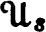 be the family of neighborhoods of s and 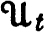 the family of neighborhoods of t; then both and are directed by ⊂. We order the cartesian product 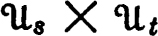 by agreeing that (T, U) ≧ {V,W) iff T ⊂ V and U ⊂ W. Clearly the cartesian product is directed by ≧. For each (T,U) in the intersection T ∩ U is non-void, and hence we may select a point S(T,U) from T ∩ U. If {V,W) ≧ (T,U), then S(V,W) ε V ∩ W ⊂ T ∩ U and consequently the net {S(T,U), (T,U) ε ,≧ } converges to both s and t. ∎
If  is a Hausdorff space and a net {Sn, n ε D,≧) in X converges to s we write
is a Hausdorff space and a net {Sn, n ε D,≧) in X converges to s we write  -lim {Sn, n ε D,≧} = s. When no confusion seems possible this will be abbreviated: lim {Sn: n ε D} = s or 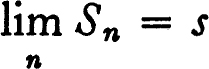. The use of “limit” should be restricted to nets in a Hausdorff space so that the usual rule concerning substitution of equals for equals may remain valid. If lim {Sn: n ε D} = s and lim {Sn: n ε D} = t, then s = t, since we always use equality in the sense of identity. As a matter of fact we shall occasionally use the notation to mean S converges to s in cases where the space is not Hausdorff.
-lim {Sn, n ε D,≧} = s. When no confusion seems possible this will be abbreviated: lim {Sn: n ε D} = s or 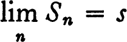. The use of “limit” should be restricted to nets in a Hausdorff space so that the usual rule concerning substitution of equals for equals may remain valid. If lim {Sn: n ε D} = s and lim {Sn: n ε D} = t, then s = t, since we always use equality in the sense of identity. As a matter of fact we shall occasionally use the notation to mean S converges to s in cases where the space is not Hausdorff.
The device used in the preceding proof is often useful. If (D,≧) and (E,>) are directed sets, then the cartesian product D × E is directed by ≫, where (d, e) ≫(f,g) iff d ≧ f and e > g. The directed set (D × E,≫) is the product directed set. We also want to define the product of a family of directed sets. Suppose for each a in a set A we are given a directed set (Da,>a). The cartesian product 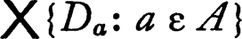 is the set of all functions d on A such that da (= d(a)) is a member of Da for each a in A. The product directed set is 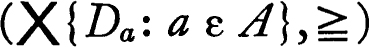 where, if d and e are members of the product d ≧ e iff da > aea for each a in A. The product order is ≧. Of course, it must be verified that the product directed set is, in fact, directed. If d and e are members of the cartesian product , then for each a there is a member fa of Da which follows both da and ea in the order >a, and consequently the function f whose value at a is fa follows both d and e in the order ≧. An important special case of the product directed set is that in which all coordinate sets Da are identical and all relations >a are identical. In this case 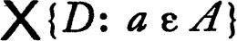 is simply the set DA of all functions on A to D, which is directed by the convention that d follows e iff d(a) follows e(a) for each member a of A. This is, for example, precisely the usual ordering of the set of all real valued functions on the set of real numbers.
The next result on limits is related to the closure axiom: A–– = A–. It is important because it replaces an iterated limit by a single limit. The situation is as follows: Consider the class of all functions S such that S(m, n) is defined whenever m belongs to a directed set D and n belongs to a directed set Em. We want to find a net R with values in this domain such that S ∘ R converges to 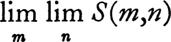 whenever S is a function to a topological space and this iterated limit exists. It is interesting to notice that the solution of this problem requires Moore-Smith convergence, for, considering double sequences, no sequence whose range is a subset of ω × ω can have this property. The construction which yields a solution to the problem is a variant of the diagonal process. Let F be the product directed set 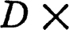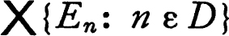 and for each point (m,f) of F let R(m,f) = (m,f(m)). Then R is the required net.
4 THEOREM ON ITERATED LIMITS Let D be a directed set, let Em be a directed set for each m in D, let F be the product 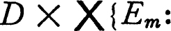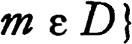, and for (m,f) in F let R(m,f) = (m,f(m)). If S(m,n) is a member of a topological space for each m in D and each n in Em, then S ∘ R converges to whenever this iterated limit exists.
PROOF Suppose and that U is an open neighborhood * of s. We must find a member (m,f) of F such that, if (p,g) ≧ (m,f), then S ∘ R(p,g) ε U. Choose m in D so that 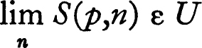 for each p following m and then, for each such p, choose a member f(p) of Ep such that S(p, n) ε U for all n following f(p) in Ep. If p is a member of D which does not follow m let f(p) be an arbitrary member of Ep. If (p,g) ≧ (m,f), then p ≧ m, hence , and (since g(p) ≧ f(p)) S ∘ R (p,g) = S(p,g(p)) ε U. ∎
SUBNETS AND CLUSTER POINTS
Following the pattern discussed in the introduction to the chapter we now define the generalization of subsequence and prove the hoped-for theorems.
A net {Tm, m ε E} is a subnet of a net {Sn, n ε D} iff there is a function N on E with values in D such that
(a)T = S ∘ N, or equivalently, Ti = SNi for each i in E; and
(b)for each m in D there is n in E with the property that, if p ≧ n, then Np ≧ m.
Since there seems to be no possibility of confusion we omit specific mention of the orderings involved. The second condition states, intuitively, “as p becomes large so does Np.” From this condition it is immediately clear that, if S is eventually in a set A, then the subnet S ∘ N of S is also eventually in A. This is a very important fact and the definition of subnet is designed to obtain precisely this result. Notice that each cofinal subset E of D is directed by the same ordering, and that {Sn, n ε E} is a subnet of S. (Let N be the identity function on E, and the second condition of the definition becomes the requirement that E be cofinal.) This is a standard way of constructing subnets, and it is unfortunate that this simple variety of subnet is not adequate for all purposes. (2.E.)
There is a special sort of subnet which is adequate for almost all purposes. Suppose N is a function on the directed set E to the directed set D such that N is isotone (Ni ≧ Nj if i ≧ j) and the range of N is cofinal in D. Then clearly S ∘ N is a subnet of S for each net S. The subnet constructed in the proof of the following lemma is of this sort (as remarked by K. T. Smith).
5 LEMMA Let S be a net and  a family of sets such that S is frequently in each member of
a family of sets such that S is frequently in each member of  , and such that the intersection of two members of
, and such that the intersection of two members of  contains a member of
contains a member of  . Then there is a subnet of S which is eventually in each member of
. Then there is a subnet of S which is eventually in each member of  .
.
PROOF The intersection of any two members of  contains a member of
contains a member of  and therefore
and therefore  is directed by ⊂. Let {Sn, n ε D} be a net which is frequently in each member of
is directed by ⊂. Let {Sn, n ε D} be a net which is frequently in each member of  and let E be the set of all pairs (m,A) such that m ε D, A ε
and let E be the set of all pairs (m,A) such that m ε D, A ε  , and Sm ε A. Then E is directed by the product ordering for D ×
, and Sm ε A. Then E is directed by the product ordering for D ×  , for if (m,A) and (n,B) are members of E there is C in
, for if (m,A) and (n,B) are members of E there is C in  such that C ⊂ A ∩ B and p in D such that p follows both m and n and Sp ε C; then (p, C) ε E and (p,C) follows both (m,A) and (n,B). For (m,A) in E let N(m,A) = m. Then N is clearly isotone, and the range of N is cofinal in D ({Sn, n ε D} is frequently in each member of
such that C ⊂ A ∩ B and p in D such that p follows both m and n and Sp ε C; then (p, C) ε E and (p,C) follows both (m,A) and (n,B). For (m,A) in E let N(m,A) = m. Then N is clearly isotone, and the range of N is cofinal in D ({Sn, n ε D} is frequently in each member of  ). Consequently S ∘ N is a subnet of S. Finally, if A is a member of
). Consequently S ∘ N is a subnet of S. Finally, if A is a member of  , if m is an arbitrary member of D such that Sm ε A, and if (n,B) is a member of E which follows (m,A), then S ∘ N(n,B) = Sn ε B ⊂ A; it follows that S ∘ N is eventually in A. ∎
, if m is an arbitrary member of D such that Sm ε A, and if (n,B) is a member of E which follows (m,A), then S ∘ N(n,B) = Sn ε B ⊂ A; it follows that S ∘ N is eventually in A. ∎
We now apply this lemma to convergence in a topological space. A point s of the space is a cluster point of a net S iff S is frequently in every neighborhood of s. A net may have one, many, or no cluster points. For example, if ω is the set of non-negative integers, then {n, n ε ω} is a net which has no cluster point relative to the usual topology for the real numbers. The other sort of extreme occurs if S is a sequence whose range is the set of all rational numbers (such a sequence exists because the set of rationals is countable). It is easy to see that this sequence is frequently in each open interval, and consequently every real number is a cluster point. If a net converges to a point, then this point is surely a cluster point, but it is possible that a net may have a single cluster point and fail to converge to this point. For example, consider the sequence –1, 1, –1, 2, –1, 3, –1 …, constructed by alternating –1 and the sequence of positive integers. Then –1 is the unique cluster point of the sequence, but the sequence fails to converge to –1.
6 THEOREM A point s in a topological space is a cluster point of a net S if and only if some subnet of S converges to s.
PROOF Let s be a cluster point of S and let  be the family of all neighborhoods of s. Then the intersection of two members of
be the family of all neighborhoods of s. Then the intersection of two members of  is again a member of
is again a member of  and S is frequently in each member of
and S is frequently in each member of  . Consequently the preceding lemma applies and there is a subnet of S which is eventually in each member of
. Consequently the preceding lemma applies and there is a subnet of S which is eventually in each member of  , that is, converges to s. If s is not a cluster point of S, then there is a neighborhood U of s such that S is not frequently in U, and therefore S is eventually in the complement of U. Then each subnet of S is eventually in the complement of U and hence cannot converge to s. ∎
, that is, converges to s. If s is not a cluster point of S, then there is a neighborhood U of s such that S is not frequently in U, and therefore S is eventually in the complement of U. Then each subnet of S is eventually in the complement of U and hence cannot converge to s. ∎
The following is a characterization of cluster points in terms of closure.
7 THEOREM Let {Sn, n ε D} be a net in a topological space and for each n in D let An be the set of all points Sm for m > n. Then s is a cluster point of [Sn, n ε D} if and only if s belongs to the closure of An for each n in D.
PROOF If s is a cluster point of {Sn, n ε D}, then for each n, An intersects each neighborhood of s because {Sn, n ε D} is frequently in each neighborhood. Therefore s is in the closure of each An. If s is not a cluster point of {Sn, n ε D] there is a neighborhood U of s such that {Sn, n ε D} is not frequently in U. Hence for some n in D, if m ≧ n, then 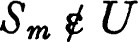, so that U and An are disjoint. Consequently s is not in the closure of An. ∎
SEQUENCES AND SUBSEQUENCES
It is of some interest to know when a topology can be described in terms of sequences alone, not only because it is a convenience to have a fixed domain for all nets, but also because there are properties of sequences which fail to generalize. The most important class of topological spaces for which sequential convergence is adequate are those satisfying the first countability axiom: the neighborhood system of each point has a countable base. That is, for each point x of the space X there is a countable family of neighborhoods of x such that every neighborhood of x contains some member of the family. In this case we may replace “net” by “sequence” in almost all of the preceding theorems.
It should be noticed that a sequence may have subnets which are not subsequences.
8 THEOREM Let X be a topological space satisfying the first axiom of countability. Then:
(a)A point s is an accumulation point of a set A if and only if there is a sequence in A ~ {s} which converges to s.
(b)A set A is open if and only if each sequence which converges to a point of A is eventually in A.
(c)If s is a cluster point of a sequence S there is a subsequence of S converging to s.
PROOF Suppose that s is an accumulation point of a subset A of X, and that U0, U1, … Un … is a sequence which is a base for the neighborhood system of s. Let Vn = ∩{Ui: i = 0, 1, …, n}. Then the sequence V0, V1, …, Vn … is also a base for the neighborhood system of s and, moreover, Vn+1 ⊂ Vn for each n. For each n select a point Sn from Vn ∩ (A ~ {s}), thus obtaining a sequence {Sn, n ε ω} which evidently converges to s. This establishes half of (a), and the converse is obvious. If A is a subset of X which is not open, then there is a sequence in X ~ A which converges to a point of A. Such a sequence surely fails to be eventually in A, and part (b) of the theorem follows. Finally, suppose that s is a cluster point of a sequence S and that V0, V1 … is a sequence which is a base for the neighborhood system of s such that Vn+1 ⊂ Vn for each n. For every non-negative integer i, choose Ni such that Ni ≧ i and SNi belongs to Vi. Then surely [SNi, i ε ω} is a subsequence of S which converges to s. ∎
*CONVERGENCE CLASSES
It is sometimes convenient to define a topology by specifying what nets converge to which points. For example, if 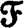 is a family of functions each on a fixed set X to a topological space Y it is natural to specify that a net {fn, n ε D} converges to a function g iff {fn(x), n ε D} converges to g(x) for each x in X. (This sort of convergence is discussed in some detail in chapter 3.) Having made such a specification the question naturally arises: Is there a topology for such that this convergence is convergence relative to the topology? An affirmative answer would enable us to use the machinery developed for topological spaces to investigate the structure of .
The problem may be formally phrased as follows. If 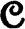 is a class consisting of pairs (S,s), where S is a net in X and s a point, when is there a topology  for X such that (S,s) ε iff S converges to s relative to the topology
for X such that (S,s) ε iff S converges to s relative to the topology  ? From the preceding discussion of convergence we know several properties which must possess if such a topology exists. We shall say that is a convergence class for X iff it satisfies the conditions listed below.* For convenience, we say that S converges () to s or that lim Sn ≡ s () iff (S, s) ε .
? From the preceding discussion of convergence we know several properties which must possess if such a topology exists. We shall say that is a convergence class for X iff it satisfies the conditions listed below.* For convenience, we say that S converges () to s or that lim Sn ≡ s () iff (S, s) ε .
(a)If S is a net such that Sn = s for each n, then S converges () to s.
(b)If S converges () to s, then so does each subnet of S.
(c)If S does not converge () to s, then there is a subnet of S, no subnet of which converges () to s.
(d)(Theorem 2.4 on iterated limits) Let D be a directed set, let Em be a directed set for each m in D, let F be the product  and for (m, f) in F let R(m,f) = (m,f(m)). If 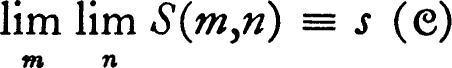, then S ∘ R converges () to s.
and for (m, f) in F let R(m,f) = (m,f(m)). If 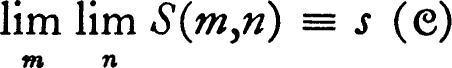, then S ∘ R converges () to s.
It has previously been shown that convergence in a topological space satisfies (a), (b), and (d). Statement (c) is easily established, in this case, by the argument: If a net {Sn, n ε D} fails to converge to a point s, then it is frequently in the complement of a neighborhood of s, and hence for a cofinal subset E of D, {Sn, n ε E} is in the complement. But clearly {Sn, n ε E} is a subnet, no subnet of which converges to s.
We now show that every convergence class is actually derived from a topology.
9 THEOREM Let be a convergence class for a set X, and for each subset A of X let Ac be the set of all points s such that, for some net S in A, S convergences () to s. Then c is a closure operator, and (S, s) ε if and only if S converges to s relative to the topology associated with c.
PROOF It is first shown that c is a closure operator. (See 1.8.) Since a net is a function on a directed set, and the set is non-void by definition, (0)c is void. In view of condition (a) on constant nets, for each member s of a set A there is a net S which converges () to s, and hence A ⊂ Ac. If s ε Ac, then because of the definition of the operator c s ε (A ∪ B)c and consequently Ac ⊂ (A ∪ B)c for each set B. Therefore Ac ∪ Bc ⊂ (A ∪ B)c. To show the opposite inclusion suppose that {Sn, n ε D} is a net in A ∪ B, and suppose that {Sn, n ε D} converges () to s. If DA = {n: n ε D and Sn ε A}, and DB = {n: n ε D and Sn ε B}, then DA ∪ DB = D. Hence either DA or DB is cofinal in D, and consequently either {Sn, n ε DA} or {Sn, n ε DB} is a subnet of {Sn, n ε D) which also converges () to s by virtue of condition (b). Hence s ε Ac ∪ Bc and we have shown that Ac ∪ Bc = (A ∪ B)c. It must now be shown that Acc = Ac, and condition (d) is precisely what is needed. If {Tm, m ε D} is a net in Ac which converges () to t, then for each m in D there are a directed set Em and a net {S(m,n), n ε Em} which converge () to Tm. Condition (d) then exhibits a net which converges () to t and consequently t ε Ac. Hence Acc = Ac.
The more delicate part of the proof, that of showing that convergence () is identical with convergence relative to the topology  associated with the operator c, remains. First, suppose {Sn, n ε D} converges () to s and S does not converge to s relative to
associated with the operator c, remains. First, suppose {Sn, n ε D} converges () to s and S does not converge to s relative to  . Then there is an open neighborhood U of s such that {Sn, n ε D} is not eventually in U. Hence there is a cofinal subset E of D such that Sn ε X ~ U for n in E. Since {Sn, n ε E} is a subnet of {Sn, n ε D} this subnet in X ~ U converges () to s by condition (b). Hence X ~ U ≠ {X ~ U)c, and U is not open relative to
. Then there is an open neighborhood U of s such that {Sn, n ε D} is not eventually in U. Hence there is a cofinal subset E of D such that Sn ε X ~ U for n in E. Since {Sn, n ε E} is a subnet of {Sn, n ε D} this subnet in X ~ U converges () to s by condition (b). Hence X ~ U ≠ {X ~ U)c, and U is not open relative to  , which is a contradiction.
, which is a contradiction.
Finally, suppose that a net P converges to a point r relative to the topology  and fails to converge (). Then by (c) there is a subnet {Tm, m ε D}, no subnet of which converges () to r, and a contradiction results if we construct such a subnet. For each m in D let Bm = {n: n ε D} such that n ≧ m} and let Am be the set of all Tn for n in Bm. Because {Tm, m ε D} converges relative to
and fails to converge (). Then by (c) there is a subnet {Tm, m ε D}, no subnet of which converges () to r, and a contradiction results if we construct such a subnet. For each m in D let Bm = {n: n ε D} such that n ≧ m} and let Am be the set of all Tn for n in Bm. Because {Tm, m ε D} converges relative to  to r, r must lie in the closure of each Am. Consequently, for each m in D there are a directed set Em and a net {U(m,n), n ε Em} in Am, such that the composition {T ∘ U(m,n), n ε Em} converges () to r. Condition (d) on convergence classes now applies. If R(m,f) = (m,f(m)) for each (m,f) in
to r, r must lie in the closure of each Am. Consequently, for each m in D there are a directed set Em and a net {U(m,n), n ε Em} in Am, such that the composition {T ∘ U(m,n), n ε Em} converges () to r. Condition (d) on convergence classes now applies. If R(m,f) = (m,f(m)) for each (m,f) in  , then T ∘ U ∘ R converges () to r. Moreover, if p ≧ w, then U ∘ R (p,f) = U(p,f(p)) ε Bm; that is, U ∘ R(p,f) ≧ m. It follows that T ∘ U ∘ R is a subnet of T, and the theorem follows. ∎
, then T ∘ U ∘ R converges () to r. Moreover, if p ≧ w, then U ∘ R (p,f) = U(p,f(p)) ε Bm; that is, U ∘ R(p,f) ≧ m. It follows that T ∘ U ∘ R is a subnet of T, and the theorem follows. ∎
The preceding theorem sets up a one-to-one correspondence between the topologies for a set X and the convergence classes on it. This correspondence is order inverting in the following sense. If 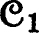 and 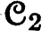 are convergence classes and 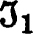 and 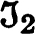 are the associated topologies, then 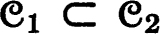 if and only if 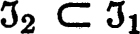. (This fact is immediately evident from the definition of convergence.) We also notice that the intersection 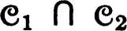 is a convergence class in view of the four characteristic properties of such classes. It is easy to see that the topology associated with is the smallest topology which is larger than each of and , and dually, the convergence class of 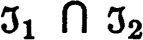 is the smallest convergence class which is larger than each of and .
PROBLEMS
A EXERCISE ON SEQUENCES
Let X be a countable set with a topology consisting of the void set together with all sets whose complements are finite. What sequences converge to what points ?
B EXAMPLE: SEQUENCES ARE INADEQUATE
Let Ω′ be the set of ordinal numbers which are less than or equal to the first uncountable ordinal Ω, and let the topology be the order topology. Then Ω is an accumulation point of Ω′ ~ {Ω}, but no sequence in Ω′ ~ {Ω} converges to Ω.
C EXERCISE ON HAUSDORFF SPACES: DOOR SPACES
A topological space is a door space iff every subset is either open or closed. A Hausdorff door space has at most one accumulation point, and if x is a point which is not an accumulation point, then {x} is open. (If U is an arbitrary neighborhood of an accumulation point y, then U ~ {y} is open.)
D EXERCISE ON SUBSEQUENCES
Let N be a sequence of non-negative integers such that no integer occurs more than a finite number of times; that is, for each m, the set {i: Ni = m} is finite. Then if {Sn, n ε ω} is any sequence, {SNi, ε ω} is a subsequence. If {Sn, n ε ω} is a sequence in a topological space, and N is an arbitrary sequence of non-negative integers, then {SNi, i ε ω} is either a subsequence of {Sn, n ε ω} or else has a cluster point.
E EXAMPLE: COFINAL SUBSETS ARE INADEQUATE
Let X be the set of all pairs of non-negative integers with the topology described as follows: For each point (m,n) other than (0,0) the set {(m,n)} is open. A set U is a neighborhood of (0,0) iff for all except a finite number of integers m the set 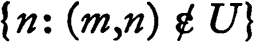 is finite. (Visualizing X in the Euclidean plane, a neighborhood of (0,0) contains all but a finite number of the members of all but a finite number of columns.)
(a) The space X is a Hausdorff space.
(b) Each point of X is the intersection of a countable family of closed neighborhoods.
(c) The space is a Lindelöf space; that is, each open cover has a countable subcover.
(d) No sequence in X ~ {(0,0)} converges to (0,0). (If a sequence S in X ~ {(0,0)} converges to (0,0), then it is eventually in the complement of each column, and the sequence has only a finite number of values in each column.)
(e) There is a sequence S in X~ {(0,0)} with (0,0) as a cluster point, and S restricted to any cofinal subset of the integers fails to converge.
Note This example is due to Arens [1].
F MONOTONE NETS
Let X be an order-complete chain; that is, X is linearly ordered by a relation >, such that each non-void subset of X which has an upper bound has a supremum. Let X have the order topology (1.I). A net (S,>) in X is monotone increasing (decreasing) iff whenever m > n, then Sm ≧ Sn(Sn ≧ Sm).
(a) Each monotone increasing net in X whose range is bounded (there is x in X such that x ≧ Sn for all n) converges to the supremum of its range.
(b) If X is the set of all real numbers with the usual order or if X is the set of all ordinal numbers less than the first uncountable ordinal, then each monotone increasing (decreasing) net whose range has an upper (lower) bound converges to the supremum (infimum) of its range.
G INTEGRATION THEORY, JUNIOR GRADE
Let f be a real-valued function whose domain includes a set A, let  be the family of all finite subsets of A, and for each F in
be the family of all finite subsets of A, and for each F in  let SF = ∑{f(a): a ε F}. Then
let SF = ∑{f(a): a ε F}. Then  is directed by ⊃ and {SF, F ε
is directed by ⊃ and {SF, F ε  ,⊃} is a net. If this net converges f is summable over A and the number to which the net converges is the unordered sum of f over A, denoted ∑{f(a): a ε A) or simply ∑Af.
,⊃} is a net. If this net converges f is summable over A and the number to which the net converges is the unordered sum of f over A, denoted ∑{f(a): a ε A) or simply ∑Af.
(a) If f is non-negative (non-positive), then f is summable iff there is an upper bound (lower bound) for the sums over finite subsets of A. (Use the preceding problem on monotone nets.)
(b) Let A+ = {a: f(a) ≧ 0} and A– = {a: f(a) < 0}. Then f is summable over A iff it is summable over both A+ and A_. If f is summable over A, then ∑Af = ∑A+f + ∑A–f.
(c) A function f is summable over A iff |f| is summable over A, where |f|(a) = |f(a)|.
(d) If f is summable on a set A, then f is zero outside some countable subset of A. (If f is different from zero at every point of some uncountable subset, then, for some positive integer n, {a: f(a) ≧ 1/n} is uncountable.)
(e) If f and g are summable over A and r and s are real numbers, then rf + sg is summable over A and ∑A(rf + sg) = r ∑Af + s ∑Ag.
(f) If f is summable over A, and B and C are disjoint subsets of A, then f is summable over each of B and C and ∑B∪Cf = ∑Bf + ∑Cf.
(g) If x is a sequence of real numbers, then the ordered sum (“sum of the series”) is the limit of the sequence Sn where Sn = ∑{xi: i = 0, 1, …, n}. In other words, the ordered sum is the limit {SF, F ε  }, where
}, where  is the family of all sets which are of the form {m : m ≦ n} for some n. This is a subnet of the net defining the unordered sum. The sequence x is absolutely summable iff the sequence | x |, where | x | |n = | xn |, has an ordered sum. The unordered sum of x over the integers exists iff the sequence is absolutely summable, and in this case, the unordered and ordered sums are equal.
is the family of all sets which are of the form {m : m ≦ n} for some n. This is a subnet of the net defining the unordered sum. The sequence x is absolutely summable iff the sequence | x |, where | x | |n = | xn |, has an ordered sum. The unordered sum of x over the integers exists iff the sequence is absolutely summable, and in this case, the unordered and ordered sums are equal.
(h) (Fubinito) Let f be a real-valued function on a cartesian product A × B. Then:
(i) |
If f is summable over A × B, then ∑A×Bf = ∑{∑{f(a,b): b ε B}: a ε A}. (The latter is one of the two iterated sums.) |
(ii) |
If, for each member a of A, f(a,b) is either non-negative for all b or non-positive for all b, if F(a) = ∑{f(a,b): b ε B}, and if F is summable over A, then f is summable over A × B. |
(iii) |
In general, both iterated sums may exist and f may fail to be summable. In fact, if both A and B are countably infinite and F and G are arbitrary real functions on A and on B respectively, then there is f on A × B such that ∑{f(a,b): a ε A} = G(b) and ∑{f(a,b): b ε B) = F(a) for all b in B and all a in A. |
Notes The results stated in this problem are those which are needed to develop measure theory using unordered summation instead of absolutely convergent series. All the results except (d), (g) and (h,ii) can be established in a much more general situation; in chapter 7 the problem will be reexamined using the notion of completeness. The order-theoretic treatment above gives some insight into more complicated examples of integration.
Historically, unordered summation was the forerunner of Moore-Smith convergence. (Moore [1].)
H INTEGRATION THEORY, UTILITY GRADE
Let f be a bounded real-valued function on the closed interval of real numbers [a,b], A subdivision S of [a,b] is a finite family of closed intervals, covering [a,b], such that any two intervals have at most one point in common. The length of an interval I is denoted | I |, and for a subdivision S the mesh, || S ||, is the maximum of | I | for I in S. We direct the family of subdivisions in two different ways:
(i) |
S ≧ S′ iff S is a refinement of S′, in the sense that each member of S is a subset of a member of S′; and |
(ii) |
S ≫ S′ iff || S || ≦ || S′||. |
Let Mf(I) be the supremum of f on I, and let mf(I) be the infimum. The upper and lower Darboux sums corresponding to the subdivision S are defined to be Df(S) = ∑{| I |Mf(I): I ε S} and df = ∑{| I |mf(I): I ε S} respectively. The Riemann sums are more complicated. A choice function for a subdivision S is a function c on S such that c(I) ε I for each I in S. The set of all pairs (S,c), such that S is a subdivision and c is a choice function for S, is ordered in two ways: (S,c) > (S′, c′) iff S ≧ S′ and (S,c) > > (S′,c′) iff S ≫ S′. For a pair (S,c) the Riemann sum is Rf(S,c) = ∑{| I |f(c(I)): I ε S}.
The basic computation is made in terms of the ordering by refinement.
(a) The nets (Df,≧) and (df,≧) are monotonically decreasing and increasing respectively, and hence converge.
(b) df(S) ≦: Rf(S,c) ≦ Df(S) for all subdivisions S and all choice functions c.
(c) For each positive number e there is a > -cofinal subset of the set of pairs (S,c) such that Rf(S,c) + e ≧ Df(S). (There is also a dual proposition.)
(d) The net (Rf, >) converges iff lim (Df,≧) = lim (df,≧). If (Rf,>) converges, then lim (Rf,>) = lim (Df,≧) = lim (df,≧).
(e) The net (Rf, >) is a subnet of (Rf, > >).
(f) The net (Rf, > >) converges iff lim (Df,≧) = lim (df,≧). If (Rf, > >) converges lim (Rf, > >) = lim (Rf, >).
Notes The Riemann integral of f is usually defined to be the limit of (Rf, > >). The advantage of considering refinement as well as mesh is, here, essentially a matter of technique. If instead of considering finite subdivisions and length of intervals we consider countable subdivisions and let | I | be the Lebesgue measure of I, the net (Rf, >) converges to the usual Lebesgue integral of f, while (Rf, > >) may not. Further, a definition of the refinement type may be used to integrate certain functions whose values lie in a vector space. (See Hille [1], chapter 3.) An integral of the Darboux type requires that the range of the function to be integrated be partially ordered. The Daniell integral and various generalizations (Bourbaki [2], McShane [2] and [3], and M. H. Stone [1]) are essentially of this sort. There is another standard way of introducing an integral, via a completion process with respect to a metric, which has many advantages (Halmos [1]).
I MAXIMAL IDEALS IN LATTICES
A lattice is a non-void set X with a reflexive partial ordering ≧ such that for every pair x and y of members of X there is a (unique) smallest element x ∨ y which is greater than each of x and y and a (unique) largest element x ∧ y which is smaller than each. The elements x ∨ y and x ∧ y are respectively the join and the meet of x and y. The lattice is distributive iff x ∧ (y ∨ z) = (x ∧ y) ∨ (x ∧ z) and x ∨ (y ∧ z) = (x ∨ y) ∧ (x ∨ z) for all x, y, and z in X. A subset A of X is an ideal (a dual ideal) iff whenever y ≧ x and y ε A, then x ε A, and if y and z belong to A so does y ∨ z (respectively, whenever x ≧ y and y ε A, then x ε A, and if y ε A and z ε A, then y ∧ z ε A).
Let A and B be disjoint subsets of a distributive lattice X such that A is an ideal and B is a dual ideal. Then there are disjoint sets A′ and B′ such that A′ is an ideal containing A, B′ is a dual ideal containing B, and A′ ∪ B′ = X.
The proof of this proposition is broken down into a sequence of lemmas.
(a) The family of all ideals which contain A and are disjoint from B contains a maximal member A′. (See 0.25.) Similarly there is a dual ideal B′ which contains B, is disjoint from A′, and is maximal with respect to these properties.
(b) The smallest ideal which contains A′ and a member c of X is {x :x ≦ c or x ≦ c ∨ y for some y in A′}. Since A′ is maximal, if c does not belong to either A′ or B, then c ∨ x ε B for some x in A′. (If z ≧ x ε B, then z ε B.)
(c) If c belongs to neither A′ nor B′, then there is x in A′ and y in B′ such that c ∨ x ε B′ and c ∧ y ε A′. Then (c ∨ x) ∧ y = (c ∧ y) ∨ (x ∧ y) belongs to both A′ and B′.
Notes This theorem is due to M. H. Stone [2]; it is the best form of one of the basic facts about ordered sets. It is used in the next two problems and it is the fact underlying the most important results on compactness (chapter 5). An application of some form of the maximal principle seems to be essential to its proof. It has been stated in the literature that this theorem (or, more precisely, a corollary to the theorem which occurs in problem 2. K) implies the axiom of choice, but I do not know whether this is the case. Finally, the definition of distributivity which is given above is unduly restrictive. Either of the two equalities implies the other (Birkhoff [1]).
J UNIVERSAL NETS
A net in a set X is said to be universal iff for each subset A of X the net is eventually in A or eventually in X ~ A.
(a) If a universal net is frequently in a set it is eventually in the set. Hence a universal net in a topological space converges to each of its cluster points.
(b) If a net is universal, then each subnet is also universal. If S is a universal net in X and f is a function on X to Y, then f ∘ S is a universal net in Y.
(c) Lemma If S is a net in X, then there is a family of subsets of X such that: S is frequently in each member of , the intersection of two members of belongs to , and for each subset A of X either A or X ~ A belongs to . (Either show that there is a family maximal with respect to the first two listed properties and demonstrate that it possesses the third, or apply 2.I, letting  be the family of all sets A such that S is eventually in X ~ A,
be the family of all sets A such that S is eventually in X ~ A,  the family of all B such that S is eventually in B, and let the ordering be ⊂.)
the family of all B such that S is eventually in B, and let the ordering be ⊂.)
(d) There is a universal subnet of each net in X. (Use the preceding result and 2.5.)
K BOOLEAN RINGS: THERE ARE ENOUGH HOMOMORPHISMS
A Boolean ring is a ring (R,+,·) such that r·r = r and r + r = 0 for each r in R. The field of integers modulo 2 is denoted I2.
(a) A Boolean ring is commutative. (Observe that (r + s)·(r + s) = r + s.)
(b) If (R,+,·) is a Boolean ring, then multiplication of members of R by members of I2 can be defined so that R is an algebra over I2.
(c) The symmetric difference AΔB of two sets A and B is defined to be (A ∪ B) ~ (A ∩ B). If  is the family of all subsets of a set X, then (
is the family of all subsets of a set X, then ( ,Δ,∩) is a Boolean ring with unit.
,Δ,∩) is a Boolean ring with unit.
(d) Let X be a set and let I2X be the family of all functions on X to I2. Define addition and multiplication of functions pointwise (that is, (f + g)(x) = f(x) + g(x) and (f·x)(x) = f(x) ·g(x)). Then (I2X,+,·) is a Boolean ring with unit and is isomorphic to ( ,Δ,∩) where
,Δ,∩) where  is the family of all subsets of X.
is the family of all subsets of X.
(e) The natural ordering of a Boolean ring is defined by agreeing that r ≧ s iff r·s = s. The relation ≧ partially orders R in such a way that the least element which follows both r and s is r ∨ s = r + s + r · s and the greatest element which precedes both r and s is r ∧ s = r · s. Each of ∨ and ∧ are associative operations and the following distributive laws hold: r ∧ (s ∨ t) = (r ∧ s) ∨ (r ∧ t) and r ∨ (s ∧ t) = (r ∨ s) ∧ (r ∨ t).
(f) Recall that S is an ideal in a Boolean ring (R,+,·) iff S is an additive subgroup and r·s ε S whenever r ε R and s ε S; the ideal S is maximal iff R ≠ S and no ideal other than R properly contains S. There is a one-to-one correspondence between maximal ideals in R and homomorphisms into I2 which are not identically zero. (The kernel of such a homomorphism is a maximal ideal.)
(g) A necessary and sufficient condition that S be an ideal in a Boolean ring is that r ∨ s ε S whenever r and s are members of S and t ε S whenever t precedes a member of S in the natural order (that is, t ≦ some member of S). A subset T of R is called a dual ideal iff r ∧ s ε T whenever r and s are members of T and t ε T whenever t follows a member of T. If r ε R, then {s: r ≧ s} is an ideal and {s: s ≧ r} is a dual ideal. If S is an ideal, T is a disjoint dual ideal, and S ∪ T = R, then the function which is zero on S and one on T is a homomorphism of R into I2. (In a Boolean ring of sets an ideal is frequently called an ∩ -ideal and a dual ideal a ∪ -ideal.)
(h) Theorem If S is an ideal in a Boolean ring and T is a dual ideal which is disjoint from S, then there is a homomorphism of the ring into I2 which is zero on S and one on T. In particular, if r is a non-zero member of the ring there is a homomorphism h of the ring such that h(r) = 1. (In other words, there are enough homomorphisms to distinguish members of the ring. A proof of this theorem may be based on 2.1.)
(i) If X is a topological space and  is the family of all subsets of X which are both open and closed, then (
is the family of all subsets of X which are both open and closed, then ( ,Δ,∩) is a Boolean algebra.
,Δ,∩) is a Boolean algebra.
(j) Not all Boolean algebras are isomorphic to an algebra of all subsets of a set. (Show by example that there are countable Boolean algebras.)
Note This investigation is completed in 5.S.
L FILTERS
A theory of convergence has been built on the concept of filter. A filter in a set X is a family of non-void subsets of X such that
(i) |
the intersection of two members of always belongs to ; and |
(ii) |
if 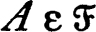 and A ⊂ B ⊂ X, then 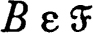. |
In the terminology of the previous problem a filter is a proper dual ideal in the Boolean ring of all subsets of X. A filter converges to a point x in a topological space X iff each neighborhood of x is a member of (that is, the neighborhood system of x is a subfamily of ).
(a) A subset U is open iff U belongs to every filter which converges to a point of U.
(b) A point x is an accumulation point of a set A iff A ~ {x} belongs to some filter which converges to x.
(c) Let ϕx be the collection of all filters which converge to a point x. Then 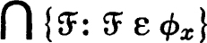 is the neighborhood system of x.
(d) If is a filter converging to x and 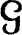 is a filter which contains , then converges to x.
(e) A filter in X is an ultrafilter iff it is properly contained in no filter in X. If is an ultrafilter in X and the union of two sets is a member of , then one of the two sets belongs to . In particular, if A is a subset of X then either A or X ~ A belongs to . (Problem 2.I again.)
(f) One might suspect that filters and nets lead to essentially equivalent theories. Grounds for this suspicion may be found in the following facts:
(i) |
If {xn, n ε D} is a net in X, then the family of all sets A such that {xn, n ε D} is eventually in A is a filter in X. |
(ii) |
Let be a filter in X and let D be the set of all pairs (x, F) such that x ε F and 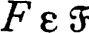. Direct D by agreeing that (y,G) ≧ (x,F) iff G ⊂ F, and let f(x,F) = x. Then is precisely the family of all sets A such that the net {f(x,F), (x,F) ε D} is eventually in A. |
Notes The definition of filter is due to H. Cartan; his treatment of convergence is given in full in Bourbaki [1]. Proposition (c) is a remark of W. H. Gottschalk; (0 is part of the folklore of the subject.
* The existence of an open neighborhood of s is essential to the proof. The iterated limit theorem, the fact that the family of open neighborhoods of a point is a local base, and the closure axiom “A–– = A–” are intimately related. Convergence has been studied in spaces with a structure less restrictive than a topology. See Ribeiro [1].
* The first three of these, with “net” replaced by “sequence,” are Kuratowski’s modification of the Fréchet axioms for limit space. See Kuratowski [1].